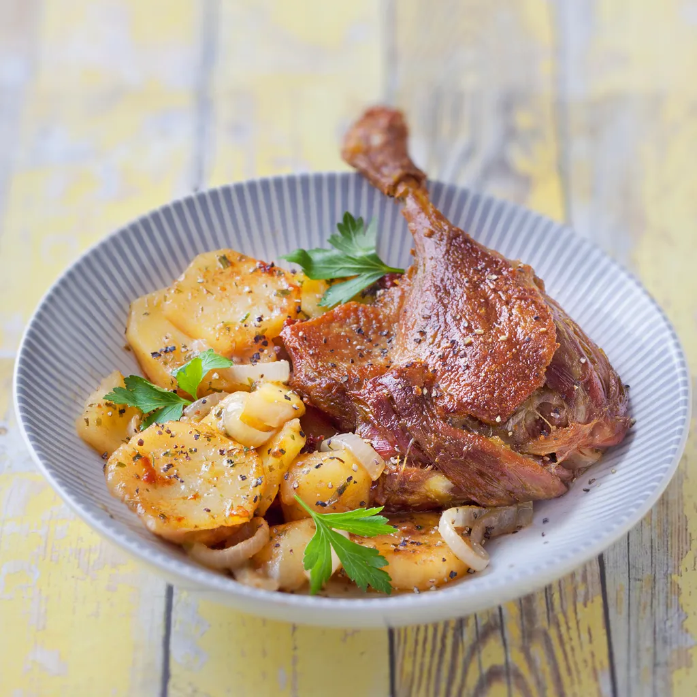

Confit de Canard

Description
One of the best food coming from the South West of France, a confit de canard is a duck leg that is cooked in
duck fat.
Ingredients
1 duck leg
1 duck fat
1 potatoes
1 rosemary
Steps
- Wash the duck leg and pat it dry.
- Rub the duck leg with rosemary and salt.
- Put the duck leg in the duck fat and cook it for 1 hour at 160°C.
- Let the duck leg rest for 1 hour.
- Cut the potatoes and cook them in the duck fat.
- Serve the duck leg with the potatoes.